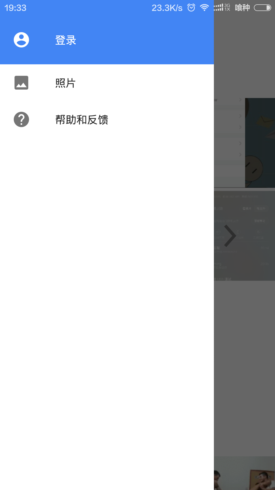

仿Google相册的侧滑栏效果--DrawerLayout
文章目录
最近在网上看到谷歌自家的相册应用（Google Photos），它的侧滑栏很吸引我，于是在google了很久之后，终于完成，和大家分享分享。
这是它的效果图： 
废话不多说，上代码：
<android.support.v4.widget.DrawerLayout xmlns:android="http://schemas.android.com/apk/res/android"
android:id="@+id/frame_drawer_layout"
android:layout_width="match_parent"
android:layout_height="match_parent">
<LinearLayout
android:layout_width="match_parent"
android:layout_height="match_parent"
android:background="@color/colorPrimary"
android:orientation="vertical">
<android.support.v7.widget.Toolbar
android:id="@+id/frame_toolbar"
android:layout_width="match_parent"
android:layout_height="wrap_content"
android:background="@color/colorPrimary"
android:fitsSystemWindows="true" />
...
<!--your content -->
...
</LinearLayout>
<!-- 侧滑的视图 -->
<fragment
android:id="@+id/frame_drawer_left"
android:layout_width="240dp"
android:layout_height="match_parent"
android:layout_gravity="start" />
</android.support.v4.widget.DrawerLayout>
要实现图中的效果还需要在value-v19/style.xml中添加：
<style name="AppTheme" parent="Theme.AppCompat.NoActionBar">
<item name="android:windowTranslucentStatus">true</item>
</style>
然后再配置文件中设置Activity的主题